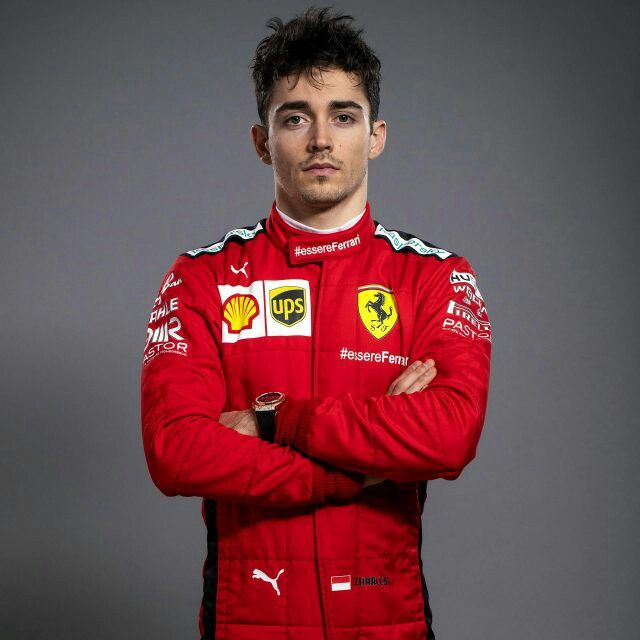
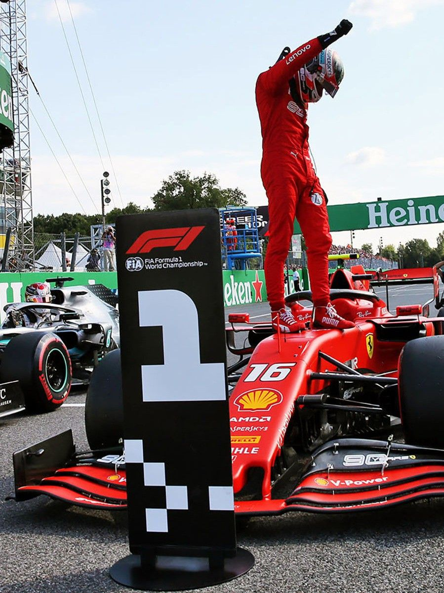
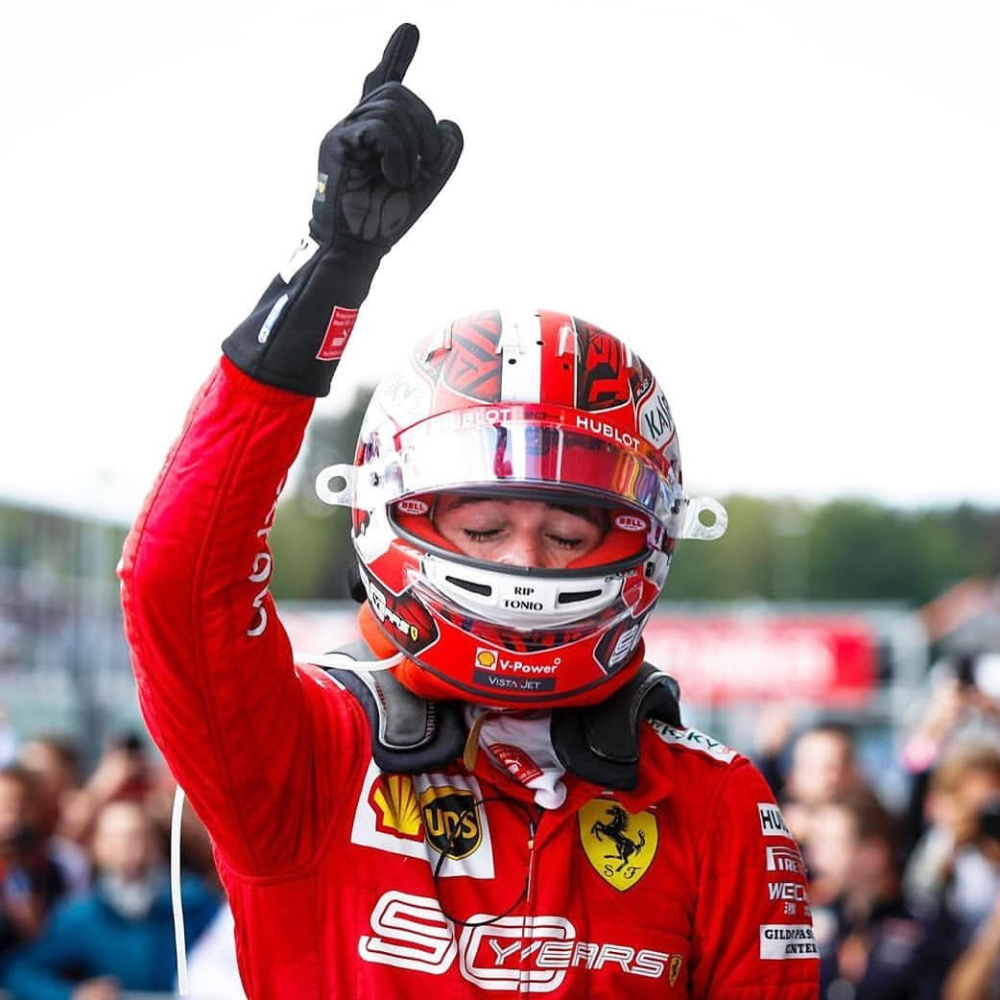

DRIVER PRESENTATION
Fenomenología Talentosa y Proyección Competitiva de Charles Leclerc en la Era Moderna
Charles Jules Leclerc inició su formación en el karting monegasco (1998), siendo patrocinado desde temprana edad por el apoyo estructural de Ferrari. Su ascenso acelerado a través de F4, F3 y F2 evidenció un dominio técnico precoz, mostrando aptitudes excepcionales en clasificación y gestión de presión aerodinámica. El fallecimiento de su padre, Jules Bianchi, piloto de F1, catalalizó su determinación competitiva. Su debut en Fórmula 1 con Sauber (2018) fue espectacular, estableciendo una trayectoria ascendente que culminó en su fichaje por Ferrari in 2019. Durante el ciclo 2021, Leclerc demostró su consolidación como referente técnico del equipo italiano, participando activamente en el desarrollo del monoplaza y acumulando victorias estratégicas. Con más de 5 victorias en su carrera y consistencia en clasificación, Leclerc representa la nueva generación de pilotos de élite capaces de competir al máximo nivel internacional.

El día que se convirtió en héroe de los Tifosi, aguantando la presión de los Mercedes para ganar en casa de Ferrari.

A pesar del final accidentado, Leclerc demostró su velocidad pura en las calles de su hogar logrando una pole histórica.
Bélgica 2019: Su primer triunfo en F1, dedicado a su amigo Anthoine Hubert, mostrando una madurez inmensa.